1. 개요
最強に可愛い天使のめぐちゃんに、恋しちゃってもいいんだよ？
러브 라이브! 하스노소라 여학원 스쿨 아이돌 클럽의 102기 출신 전(前) 멤버.[7] 오사와 루리노, 안요지 히메와 함께 미라쿠라파크!로 활동했다.
2. 상세
2.1. 자기 소개
(23.02.10 업로드)
자신의 귀여움을 자각하고 있어 귀엽게 보이기 위한 노력을 아끼지 않는다.
한편으로는 흥미가 없는 일은 전혀 하지 않다 보니 학업 성적이 부진해 학원에 입학하게 되었다.
지금은 사정으로 인해 스쿨 아이돌 활동을 쉬고 있다.
(23.12.10 업로드)
(24.04.13 업로드)
「미라쿠라파크!」로 온세상을 빠져들게 하기 위해, 오늘도 귀엽게 보이기 위한 노력을 아끼지 않고 있다.
한편 흥미가 없는 일은 일절 하지 않기 때문에, 공부는 괴멸적.
어릴 적부터 탤런트 활동을 하고 있으며, 자신의 귀여움을 자각하고 있다.
세계를 빠져들게 하기 위해 언제나 노력을 아끼지 않고 있다.
한편 흥미가 없는 일은 일절 하지 않기 때문에 공부는 괴멸적.
고등학교 졸업 후, 꿈을 이루기 위해 세계를 향해 날갯짓을 시작했다.
2.2. 외형
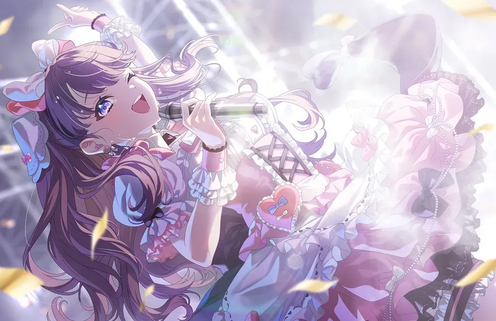
- 갈색 머리카락을 양쪽에서 머리핀으로 고정시켰는데 일종의 변종 투 사이드 업이자 변종 반묶음이다. 평소 헤어 스타일로는 눈치채기 어렵지만 머리를 묶은 도구가 달라지거나 성우가 메구미의 헤어 스타일을 재현한 것을 보면 확실히 투 사이드 업임을 알 수 있다. 메구미는 역대 러브 라이브 시리즈 캐릭터들 중 유난히 머리숱이 풍성한 편인데 이와 같은 헤어 스타일이 이러한 머리숱을 한층 더 풍성해 보이게 한다.
- 하스노소라 멤버 11명 중 작화상 가장 글래머하게 묘사된다. 키도 160cm로 일본 여성치곤 큰 편이다.
- 코즈에, 루리노와 함께 흰색 니삭스를 신고 다니지만 메구미의 것은 다른 2명이 신고 다니는 것보다 좀 더 짧으며 윗부분에 레이스처럼 보이는 무늬가 들어가 있다.
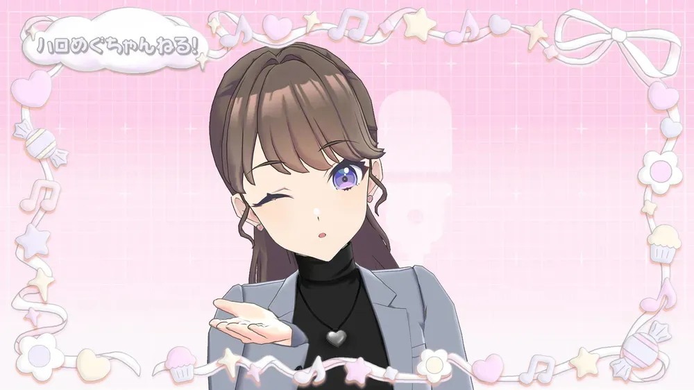
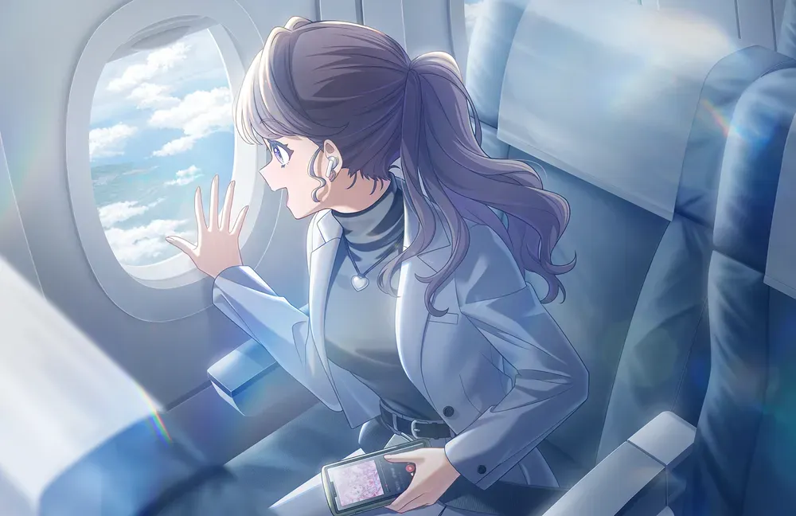
- 고등학교 졸업 후에는 머리를 높은 포니테일로 묶었으며, 귀를 뚫은 것인지 분홍색 하트 모양 귀걸이를 착용하기 시작했다.
2.3. 보컬 스타일
깔끔한 미성 보컬. 히메가 들어오기 전까지는 유닛곡에서 루리노의 튀는 목소리를 홀로 잡아 주는 역할이었다. 진성과 가성을 편안하게 넘나드는 것으로 보아 가창력 자체도 준수하다. 다만 창법에 기교를 많이 섞지는 않는다.
성우인 츠키네 코나가 개인 SNS에 기타를 치며 노래 부르는 영상을 간혹 업로드하는데, 이것과 메구미의 보컬 톤은 큰 차이가 없다. 요약하면 본래 톤대로 부르는데, 그 타고난 톤 자체가 좋다는 느낌.
3. 효빈광역시와의 관계 (등도사회복지재단 유니버스)
"여러분~ 메구찌의 복지 방송, 지금부터 스타트 큥! 💖 (도네이션 환영)"
사회복지를 빙자한 큐트 뿜뿜 인방/틱톡커 전업 양성소
3.1. 청엽구 동리동의 지배자, 등도사회복지재단
효빈광역시 청엽구 동리동 일대를 꽉 잡고 있는 재단. 전통적인 대면 복지 대신 '인터넷 방송'과 '숏폼 크리에이터 육성'이라는 극단적인 하이테크(?) 복지를 지향한다. 시설 어딜 가도 링라이트가 번쩍이고 스마트폰 삼각대가 세워져 있으며, 직원들은 텐션 높은 인방 톤으로 말을 건넨다. 다만 파트너(루리노)가 곁에 없으면 관장님들이 금방 방전되어 쓰러진다는 치명적인 단점이 있다.
등도 종합사회복지관 (가형) (소재지: 청엽구 동리동 29)
청엽구의 핵심 복지관. 복지관 내에 '메구찌'식 큐트 뿜뿜 방송을 하루 종일 틀어대며, 지역 어르신들과 주민들에게 은근슬쩍 도네이션(후원금)을 유도한다는 무시무시한 소문이 있다. 간선 청엽02번 버스를 타고 쉽게 접근할 수 있다.
3.2. 실버 타운의 파괴자(?) 동리 노인종합복지관
동리 노인종합복지관 (소재지: 청엽구 동리동 29)
경로당 화투판을 밀어내고 어르신 인방 시청 문화를 정착시킨 기적의 장소. 어르신들이 관장님의 귀여운 인방 시청에 완벽하게 중독되어, 손주들 주려고 모아둔 쌈짓돈으로 별풍선(도토리)을 쏘시는 바람에 효빈시 맘카페에 자녀들의 항의 전화가 빗발친다.(...)
3.3. 조기 인방 교육의 산실 (아동 및 청소년 시설)
- 동리 해피 칠드런 (아동양육시설): 보육원 내에 자체 인터넷 방송국 스튜디오가 차려져 있다. 꼬마 원생들이 직접 밥 먹는 먹방과 브이로그를 찍어 올리며 자체적으로 도토리(별풍선)를 벌어들이는 자급자족형 인플루언서 둥지.
- 동리 문화의집 (청소년문화의집): 유튜버, 틱톡커 양성에 완전히 미쳐있는 곳. 전 구역에 링라이트와 초록색 크로마키 스크린이 깔려 있어서, 방과 후에 중고딩들이 모여 춤을 추고 챌린지 영상을 찍느라 정신이 없다.
- 항동2가 나래 지역아동센터 (소재지: 남구 항동2가): 틱톡과 릴스 촬영에 진심인 아이들 소굴. 항동 물류단지의 거친 컨테이너를 배경으로 힙하게 찍은 댄스 릴스가 알고리즘을 타면서 효빈시 초딩 인싸들의 성지가 되었다.
- 영색무 지역아동센터 (소재지: 안천구 영색무동): 이름부터 실루엣 댄스(영색무)의 기운이 느껴지는 곳. 랜덤 플레이 댄스와 틱톡 챌린지에 미쳐있어서 마룻바닥이 남아나질 않는다.
3.4. 하이텐션 노동과 힐링 (장애인 복지시설)
- 동리 해피누리 주간보호센터: 재활 훈련이 힘들어도 이곳 분위기만큼은 아이돌 대기실 뺨친다. 시설장이 항상 행복하고 텐션 높은 인방 스트리머 톤으로 오늘의 식단과 공지사항을 낭독해 준다.
- 서목 선구류포장장 (직업재활시설 / 서목해양공단 ZONE B): 갑판 청소용 솔, 소형 페인트 롤러 등을 비닐 포장하는 공장. 자칫 지루해질 수 있는 단순 노동 현장이지만, 텐션 높은 방송을 브금(BGM)으로 빵빵하게 틀어놓고 포장해서 작업 능률을 끌어올린다.
3.5. ⚠️ 재단 소속이지만 테마가 다른 (예외) 시설들
재단법인은 분명 '등도(메구미)' 소속이지만, 동네 특성상 다른 캐릭터의 영혼(?)에 지배당한 곳들도 존재한다. 아니 명색이 메구찌 재단인데 왜 딴 애들 영혼이 빙의한 건데...
- 등기산 유스호스텔 (북구 등기동): 텐션 높은 재단 분위기와 달리 타카마츠 토모리(등동) 감성에 잡아먹힌 곳. 틱톡 대신 시설 곳곳에 곤충/식물 도감이 깔려 있고, 밤에는 담력 훈련 대신 야광 돌멩이 수집 대회를 연다.
- 동리 지역아동센터 (청엽구 동리동): 같은 동리동이지만 이곳은 하자와 츠구미(동리) 마인드가 강하다. 센터장님이 체력의 한계를 극복해가며 묵묵히 매일 아이들 간식으로 수제 쿠키 100개씩을 구워내는 훈훈한 빵집 감성이다.
4. 매체별 행적
4.1. Link! Like! 러브 라이브!
자세한 내용은 후지시마 메구미/Link! Like! 러브 라이브! 문서를 참고하십시오.
4.2. 애니메이션
자세한 내용은 후지시마 메구미/애니메이션 문서를 참고하십시오.
4.3. 러브 라이브! 시리즈 오피셜 카드 게임
자세한 내용은 후지시마 메구미/러브 라이브! 시리즈 오피셜 카드 게임 문서를 참고하십시오.
4.4. 센터곡 일람
* 타이틀 곡은 볼드 처리
아이덴티티
논픽션 히어로 쇼
천재일지도 몰라
이심☆전신
전방위 두근♡
친구가 될 수 있는 장소(B.G.P. Ver.)
해피지상주의!
여름스런 pain
한낮 À la mode
마하라 잼버리Ⅱ
끌어안아 주는 꽃잎
일단
4.5. 솔로곡 일람
역시 천사!
헬로메구찬가
5. 2차 창작 및 동인 이미지
- 인사말에 '~메구'를 붙이는 것에 착안해 모든 말 끝에 '~메구'를 사용하는 것으로 묘사되기도 한다.
- 멀리 떨어져 있는 루리노에게 자신의 모습을 보여주기 위해 탤런트 활동이나 스쿨 아이돌 활동을 하는 모습, 어린 시절 루리노에게 선물받았던 운동화와 같은 모델의 운동화만 계속 신는 모습, 반려견에게 루리노에게서 딴 이름을 지어주는 모습 등을 보여주어 팬들에게는 시리즈 전통의 사랑이 무거운 소꿉친구 계보(미나미 코토리, 와타나베 요우, 우에하라 아유무, 아라시 치사토)를 잇는 캐릭터로 묘사되기도 한다.
- 팬덤에서는 국산소라는 별명으로 불린다. 작중 메구미의 글래머한 몸매에 대한 묘사와 더불어 링크라 스토리 11화에서 카호가 메구미에게 던진 발언[9] 때문에 이러한 밈이 붙었다.
즉 메구미는 한우 사준다고 해놓고 도망쳤다는 소리
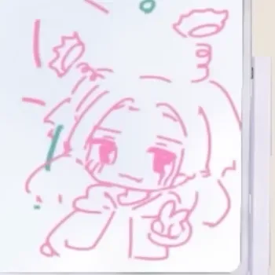
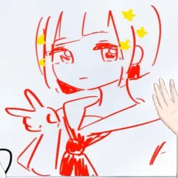
- 그림을 굉장히 잘 그린다. 다른 분야는 몰라도 인물 일러스트만큼은 메구미가 하스노소라 내 독보적 1인자의 위치를 점하고 있다. 메구미와 견원지간인 코즈에의 그림이 굉장히 슈르한 것과 대비를 이루어 소재거리가 되기도 한다.[10]
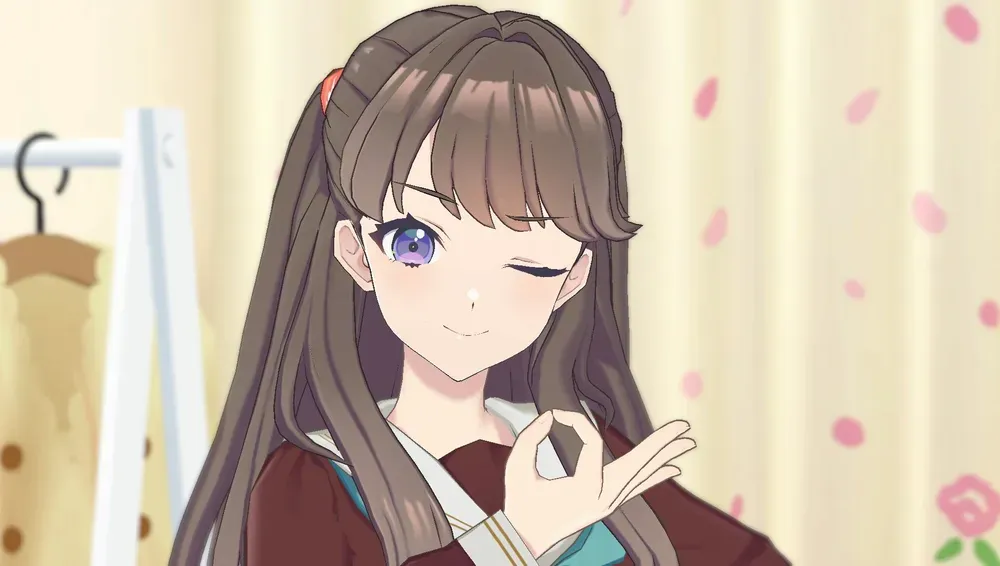
- 활동기록 14화에서 '인터넷이 학교에 도움이 된다고 생각하게 하는 방법'으로 "그렇다면 할 일은 정해져 있어! 돈이지 돈!"이라는 대사를 쳐 돈과 엮이기 시작했다. 해당 대사 직후 사야카 때문에[11] 메구미가 주식을 시작한다고 오해한 루리노가 메구미의 어깨를 잡고 잘 될 리가 없다고 절대 시작해서는 안 된다며 짤짤 흔들어대는 장면이 나오면서 화룡점정.
소꿉친구의 진정한 우정이 때문인지 똑같이 주식 관련 밈이 있는 머니데스노 양과 엮이는 2차 창작이 종종 보인다.
5.1. 하스노소라의 바보왕
자기소개에 '흥미 없는 일은 하지 않고 학업 성적이 부진하다'는 내용이 있어 하스노소라의 바보왕 유력 후보로 꼽히기도 한다. 스리즈 부케와 DOLLCHESTRA 멤버들이 중간고사 기간(2023년 5월 16일~19일) 동안 방송을 쉬기로 했음에도 불구하고 5월 17일에 개인 방송을 잡아두는 모습을 보였고 뒤이어 기말고사 기간(2023년 7월 10일~13일)인 7월 10일에도 개인 방송을 진행하는 모습을 보이면서 의혹이 커졌다. 참고로 메구미가 졸업한 105기 시점에서는 아무도 시험 기간에 생방송을 진행하지 않는다(...).
멤버별로 좋아하는 과목이 공개되었을 때 다른 멤버들은 정상적으로 과목 이름을 댔지만 메구미는 '공부 같은 건 장래에 도움 안 되니까 괜찮잖아'라고 답변하였다. 공부를 놔버린 학생의 전형적인 변명 같은 답이라 사실상 공부에 아예 뜻이 없는 듯하다.
링크라의 스토리가 진행되면서 메구미가 한자 읽기에 어려움이 있는 수준이라는 것이 밝혀졌고 사실상 하스노소라의 독보적인 바보왕이 되었다. 학업에 어려움을 겪는 멤버는 있어도 한자조차 제대로 못 읽을 정도로 공부를 못하는 멤버는 없기 때문이다. 그나마 한자 쓰기를 틀리는 카린이 메구미에 근접하는 바보도를 자랑한다. 일본에서 한자를 못 읽는 것은 유별나게 어려운 한자가 아닌 이상 한국어로 치환했을 때 '않 먹어', '빨리 낳으새요'를 틀리는 정도의 느낌.
103기가 종료될 무렵부터 팬덤에서는 '과연 메구미가 무사히 유급하지 않고 진급할 수 있을 것인가'에 대한 진지한(...) 토론이 이어졌고, 아예 루리노는 만우절 특집 방송에서 "메구쨩이 유급했다"는 드립을 쳤다.
이렇게 공부와는 담을 쌓았지만 반대급부로 작사, 작곡도 하고 기타 연주도 할 줄 아는 등 다른 쪽으로 재주가 많다. WITH MEETS 방송에도 능숙하고 기재를 다루는데도 능한 것으로 그려지며, 은근히 생각도 깊어서 동료들이 고민에 빠져있을 때 날카로운 조언을 해주는 모습도 종종 그려진다.
또 104기 후반부 에피소드에서는 머리가 나빠서 공부를 못한 것이 아니라, 어머니의 가치관에 반하여 공부를 거부한 것이 밝혀졌다. 또한 선배 그룹의 야자와 니코처럼 정작 필요시 마음을 굳게 먹고 하면 나름대로 괜찮은 성적을 받아냄으로 머리 자체는 좋은 것을 증명했다. 물론 그렇다고 하스노소라의 바보왕이라는 이미지가 사라진 것은 아니지만(...).
기존엔 럽라 시리즈 전체의 바보왕이라 칭해질 정도의 극강 바보 이미지를 갖고 있었으나, 새롭게 발족한 후배 그룹에서 선배 그룹의 모든 바보들은 물론, 상술한 메구미의 공부 전적마저 귀엽게 보일 정도의 압도적인 바보왕이 등장함에 따라 그 왕좌를 물려주게 되었다.[12] 물론 하스노소라 내에서 메구미의 왕좌는 굳건하다.
6. 커플링
* 같은 유닛 → 동기 → 기타 멤버 공식 넘버 순 정렬
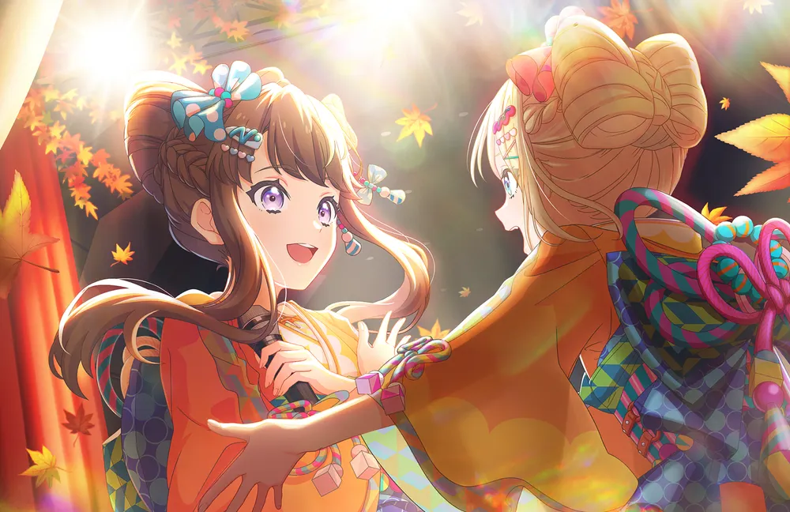

1살 연하의 소꿉친구이자 같은 미라쿠라파크! 멤버. 다만 어린 시절 루리노의 전학, 그리고 뒤이은 유학으로 인해 여러 해 떨어져 있었던 것으로 보인다. 루리노는 메구미를 매우 신뢰하여 메구미의 말이라면 철석같이 믿고 메구미와 붙어 있으면 '루리 포인트'가 떨어지지 않는다. 활동기록에서 가끔 메구미가 루리노한테 집착하는 모습을 보이기도 하는데, 이 때문에 메구미한테 얀데레 이미지가 붙어있다.
히메의 최애 아이돌 2호.[13] 메구미는 신입 부원을 모집(?)하겠다며 자신의 아크릴 스탠드를 미끼로 함정을 설치했는데 여기에 히메가 달려들어 걸리고 말았다. 메구미와는 인터넷 방송을 한다는 공통점이 있다. 다만 메구미는 소통 방송, 히메는 게임 스트리밍이 주된 컨셉이라 방송 방향성은 다르다.
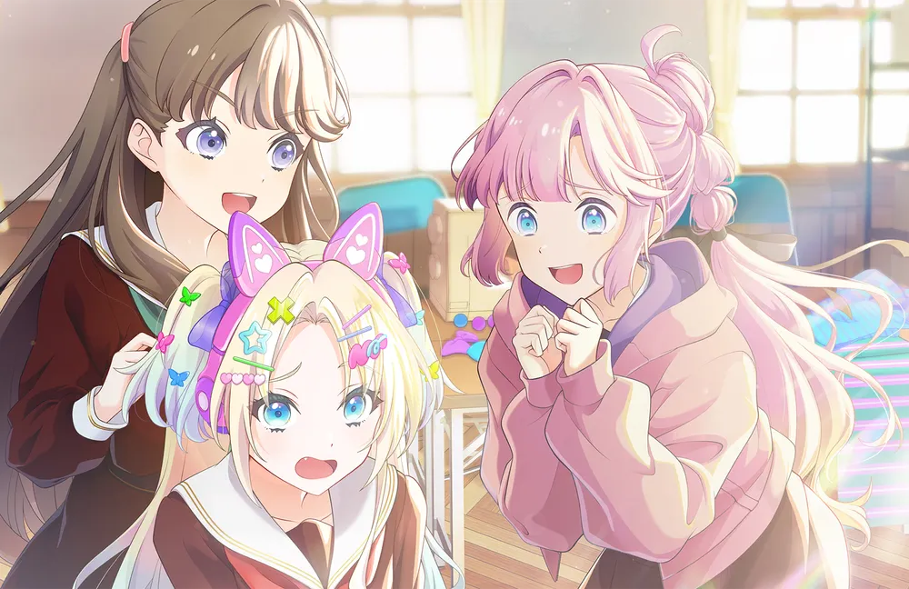

히메가 게임과 더불어 가장 좋아하는 아이돌. '인기 조합 선배 + 아이돌 오타쿠 후배'의 유닛 구성이라 Liella!의 유닛 CatChu!가 생각난다는 의견이 있다.


기본적으론 잔소리가 많이 나오는 견원지간 관계. 코즈에가 츠즈리와 메구미를 혼내는 2학년들이지만, 츠즈리가 4차원으로 가려는 걸 잡아주는 관계라면 메구미는 잘하는 애가 꾀부리는 걸 바로 잡아주면서 코즈에가 평소 하지 않을 만한 일들을 이끌어주는 관계다. 능력치 스펙트럼이 정반대이기도 해서 티격대긴 하지만 서로를 굳게 인정하고 있다.
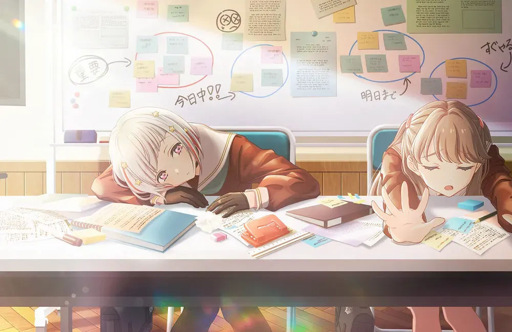
코즈에 두통 유발 콤비. 극한의 천연 마이페이스 츠즈리와 자유분방한 메구미라 고삐가 풀릴 법하지만, 의외로 메구미가 중심을 잡아준다.


102기 3인방이 다들 다른 방면으로 단단히 4차원 하는 멤버들인지라 나잇값 못하는 묘사가 자주 나온다. 매체를 불문하고 대삼각이 등장해서 뒤집어놓을 때마다 작년에 이들을 홀로 케어했던 사치가 얼마나 위대한 사람인지 끊임없이 재평가받는다.[14]
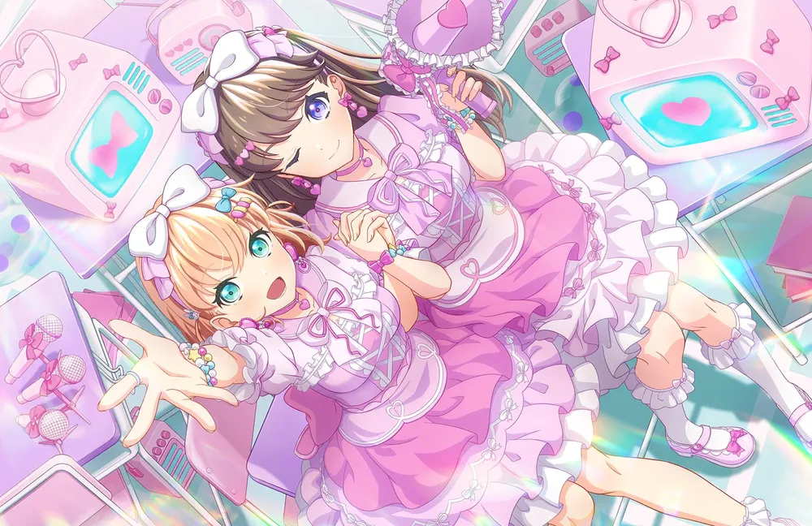
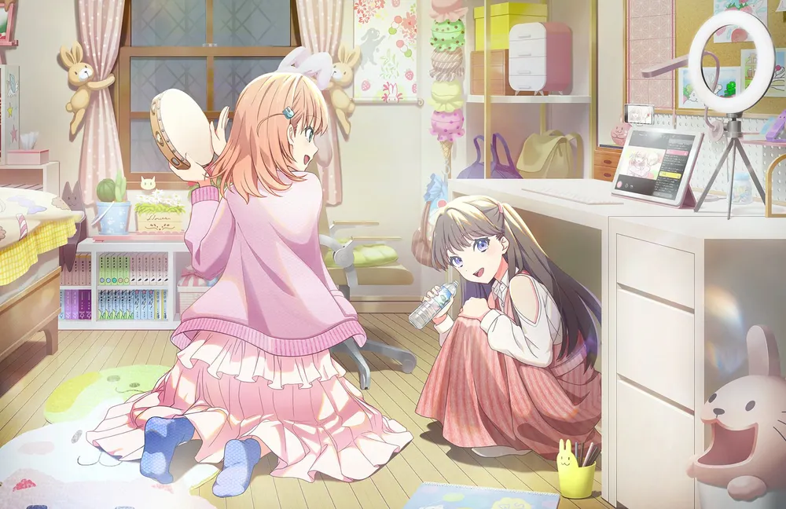
카호와 메구미 모두 공부를 못 한다는 이미지가 있으며[15] 밀린 방학숙제로 끙끙대는 모습이 나온다. 2024년 2월 셔플 유닛 당시 브레이크 없는 폭주기관차 모드로 8시간 연속 방송을 하는 기염을 토했다.[16]
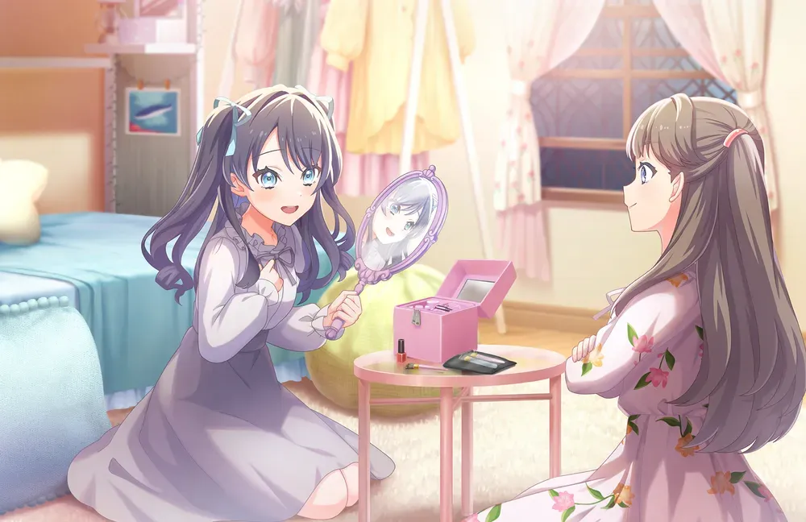
사야카는 초기에는 루리노에게 쌀쌀맞게 대하던 메구미에 대해 반감을 가졌지만, 복귀 이후에는 평범하게 클럽 선후배로서 친하게 지내며 메이크업 등을 배우고 존경한다.
6.1. 멤버 중간생일 기념일
7. 캐릭터 상품

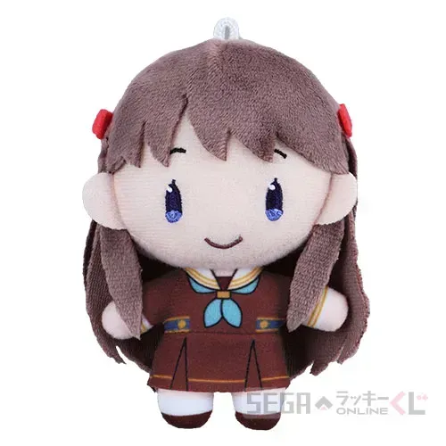
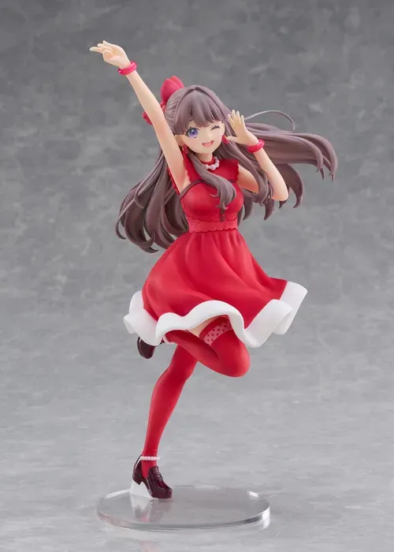
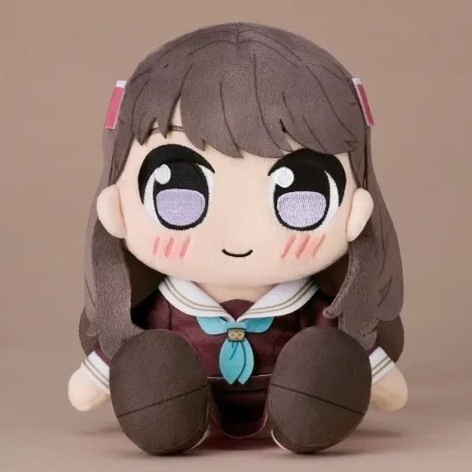
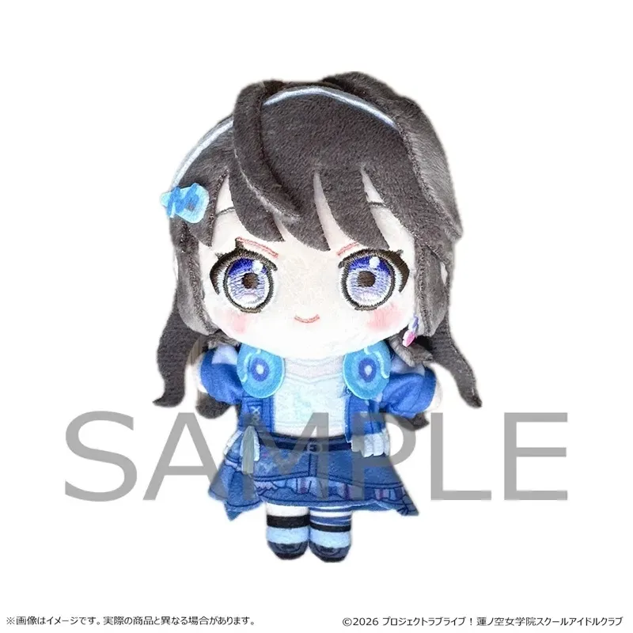
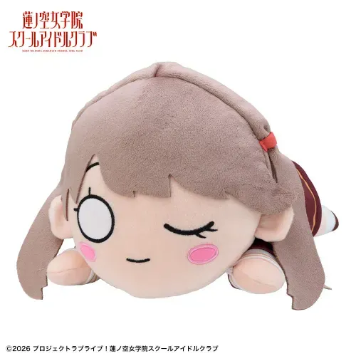
8. 기타
- '헬로메구'(ハロめぐ)와 '바이메구'(バイめぐ)라는 특유의 인삿말을 사용한다.
- 개인 방송 채널인 '헬로메구 채널'을 운영하고 있으며 자신의 팬들을 '메구당(党)'이라 부른다. 자칭 5000만 명. 덕분에 한국 한정으로 공산주의나 독재자 관련 네타가 흥한다.
- 학교가 후미진 곳에 있어서 그런지 바이크 면허를 따고 싶어 한다.
- 본가에서 개(셰퍼드)를 키운다. 이름은 '하리노'[17]이며 하얀색 대형견이다. 메구미는 루리노와 하리노가 쌍둥이라고 주장한다.
- 생일이 12월 20일로, 캐릭터 공개 당시 카나타(12월 16일생)를 제치고 러브라이브 시리즈 주연 캐릭터 중 가장 마지막으로 생일을 맞이하는 캐릭터였으나, 12월 28일생인 Liella!의 토마리가 공개되며 기록이 깨졌다.[18]
- 메구미 어머니의 성우도 거물 성우인 타무라 유카리가 캐스팅되었다.[19]
- 공식 넘버는 6번이다.
- 하스노소라를 졸업한 후에는 미국으로 유학을 갔는데, 로스앤젤레스나 샌프란시스코 등 태평양 표준시(PDT)를 사용하는 서부 지역으로 간 것으로 강하게 추정된다. (미국 러브라이버들 왈: "그 메구미가 애리조나씩이나 알 리가 없다"...)
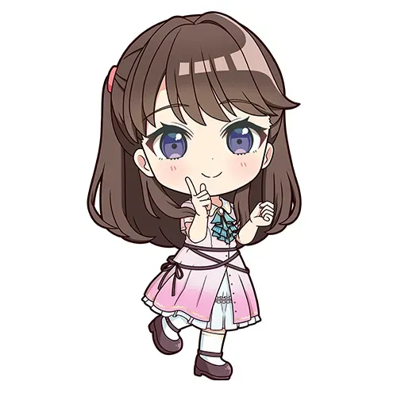
天使の声が 聞こえてる？
オーケー 配信始めるね☆
世界が夢中の 藤島 慈♡
愛を込めて ハっロめぐ〜♡
천사의 목소리가 듣고 싶어?
OK~ 방송 시작할게☆
세계가 빠져드는 후지시마 메구미♡
사랑을 담아서 헬로메구~♡
8.1. 프로필 일러스트

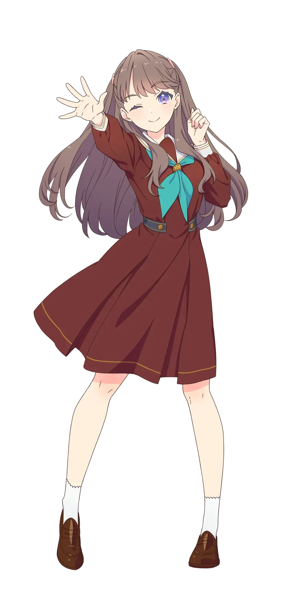
8.2. 생일 굿즈/일러스트
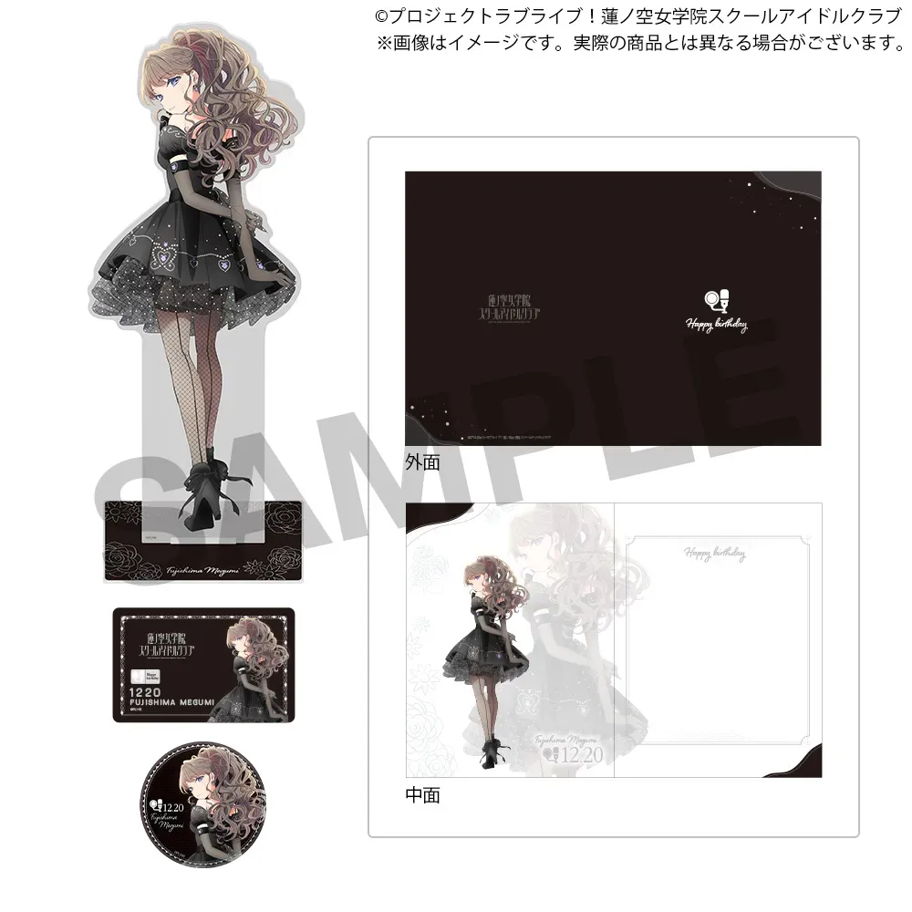
2024.12.20.
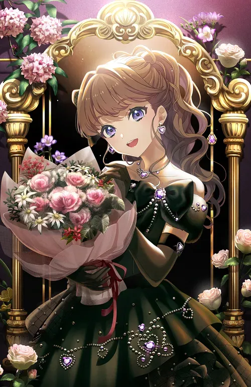
2024.12.20.